Watch.
Guide.
Judge.
A god game on a small round world. Ten tribes light their fires, raise their walls and send out their warriors — and you are the god above them, with a hand that can lift a rock, call the rain, or carry a whole village's hope.
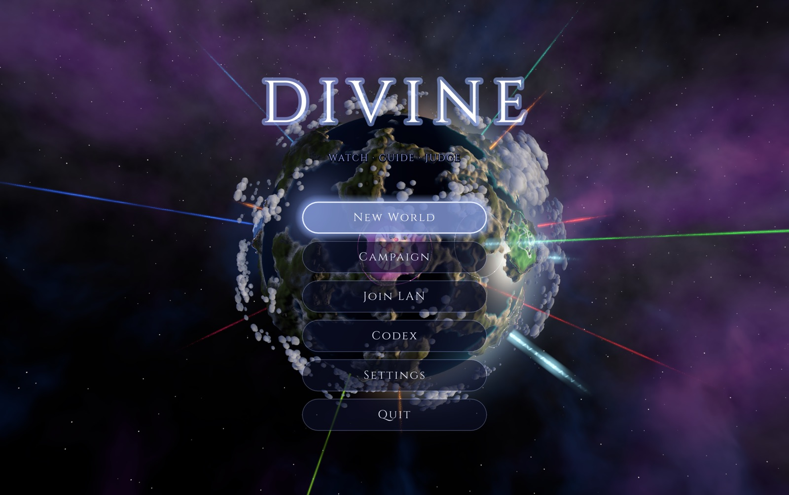
A whole world you can turn in your hand
The world is a planet you can see all of: islands, highlands and seas wrapped round a sphere, with day sweeping across it and night following. Every tribe on it lives by itself — they gather, cut wood, have children, grow old and are buried — and none of them is waiting for you.
- 10tribes on every world
- 10civilisations to play
- 50story chapters
- 4gods on one world (LAN)
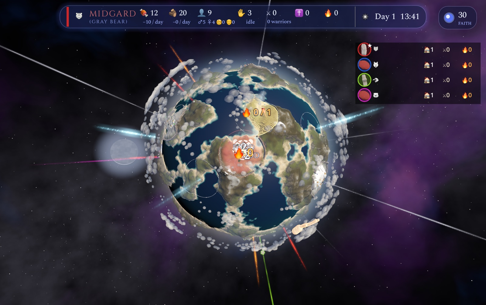
Land is won with fire
Your power over a place is the fire your people keep lit there. Fires cost wood every dawn; relays carry your land out across the world, one ring at a time; and where your rings meet a rival's, the side with more fire takes it — a god stone falls, and a countdown starts.
Fire is power
Each lit campfire adds to the power of every ring joined to it. Five fires is what one village can afford; more comes from more villages, joined.
Relays are reach
A relay is a signal fire on a hill. Chained ring to ring back to a village, it carries your land — and your fire — toward the next one.
Warriors hold the ground
Warriors standing in a ring add to a claim or defend one. Behind the front, a war band that outnumbers the defenders at a relay puts it out — and the chain beyond goes dark.
Walls and gates
Every village is ringed by a stone wall that follows the ground, with two gates. Shut them and nothing passes — enemies must hack the doors down, under your towers.
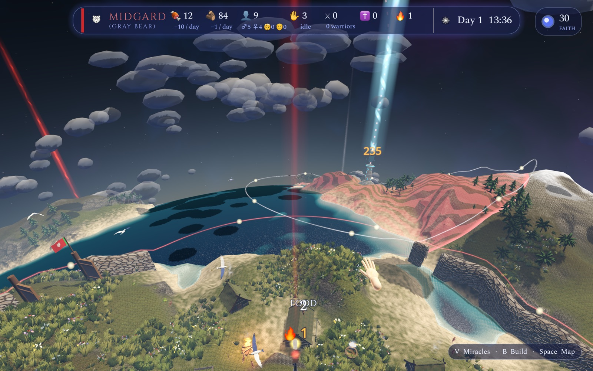
The god's hand
You don't click on the world — you reach into it. The hand picks up a miracle from the wheel and carries it: lower the land into the sea or raise a bridge out of it, plant a forest, call the rain onto a fire, throw a rock, wrap your warriors in a shield. Every miracle costs the faith your people give you.
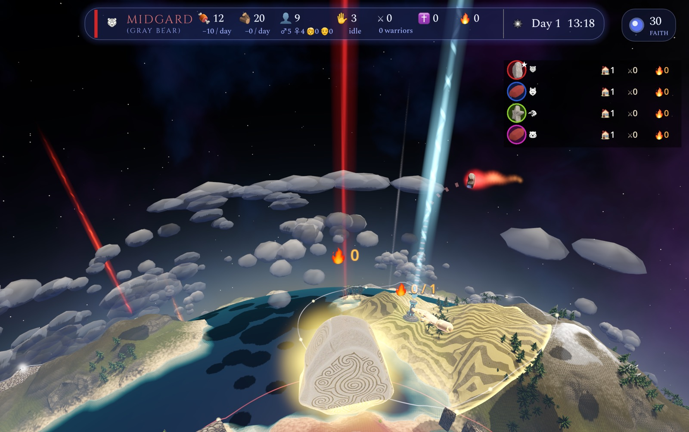
Ten civilisations, fifty chapters
The campaign is ten stories, one for each people, five chapters each — and every one of them ends on a choice that is not easy. They are told the way old stories were: as a picture book, a page at a time, read aloud.
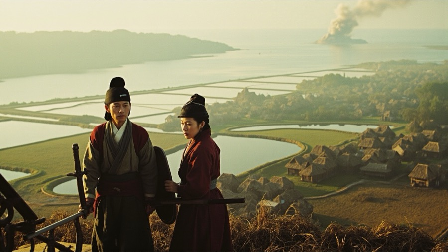
Islands of rice and mountain shrines, many villages under one queen who speaks with the sun.
The Sun's Daughter · The Hundred Mirrors · The Day the Sun Hid · A Mound of a Hundred Paces · The Clay Attendants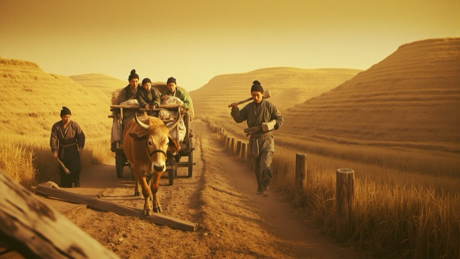
The flowery people of the yellow river, children of Fuxi and Nuwa.
Yellow Earth · The Long Wall · The Rope and the Hand · Rain at Daze · Winter Clothes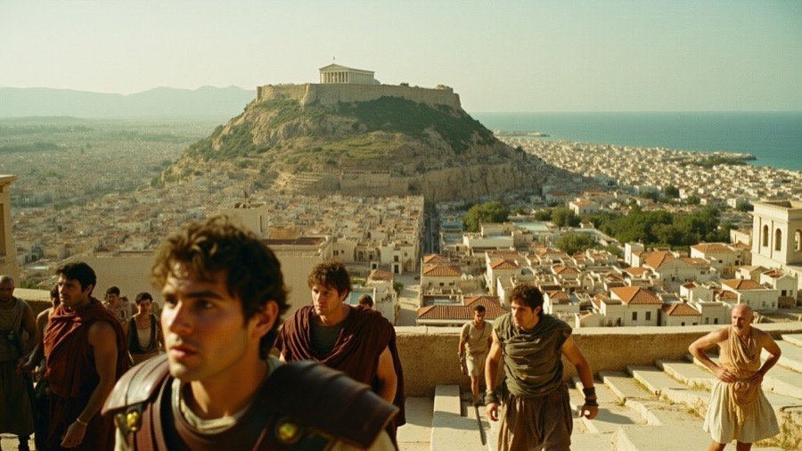
A city of marble and argument, watched over by the owl of the grey-eyed goddess.
The Empty Perch · The Second Ship · What the Owl Said · The Cup and the Boat · The Wine-Dark Sea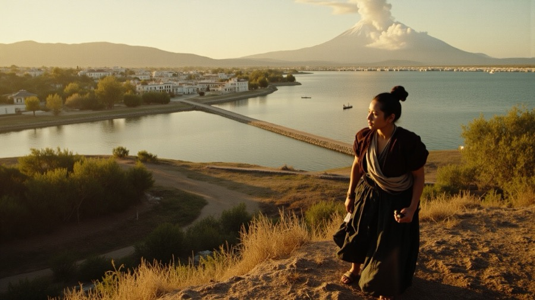
A city raised from the lake on floating fields and causeways.
The Floating Gardens · The Chalca Shore · The House Without a Door · The Binding of the Years · New Fire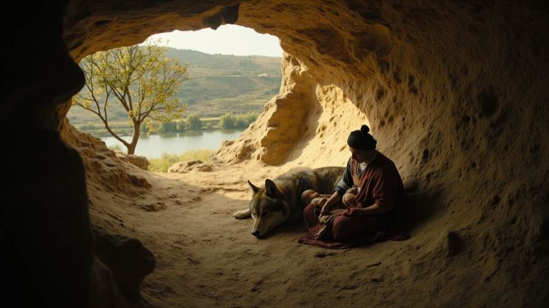
Seven hills by a river, raised by twins the she-wolf nursed — a city of law and roads.
The Wolf's Hill · The Latin Name · The Night of the Dogs · The Bridge on the Anio · Veseris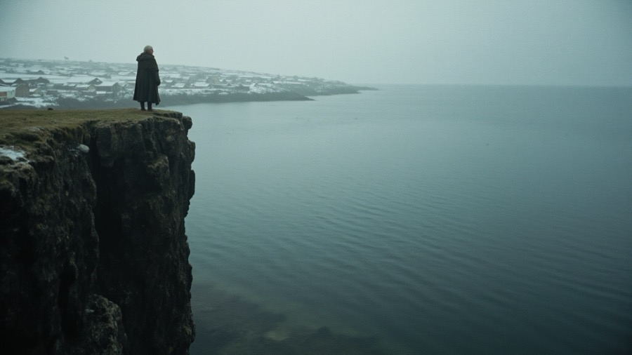
Fjord folk of the cold north, whose fiercest warriors fight in the skin of the bear.
The Summer That Did Not Come · The Bear-Shirts · The Den Under the Snow · The Family Cliff · The Dragon Ships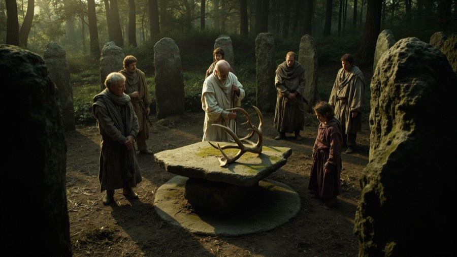
Green islands of mist and stone circles, where druids keep the old law.
The Mist and the Stones · The Guest at the Fire · The Body in the Bog · The Legate's Price · The Legions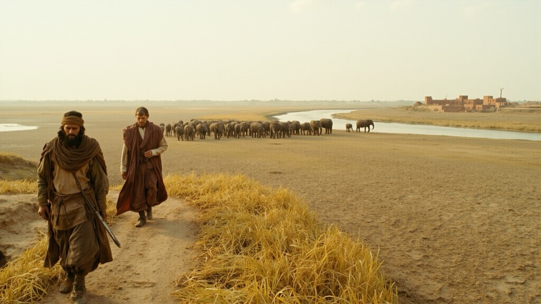
A great land of sacred rivers and monsoon rains, where sages seek the truth under the banyan.
The Late Rains · The Catch · The Bones in the Tank · Five Hundred · Where the Clouds Go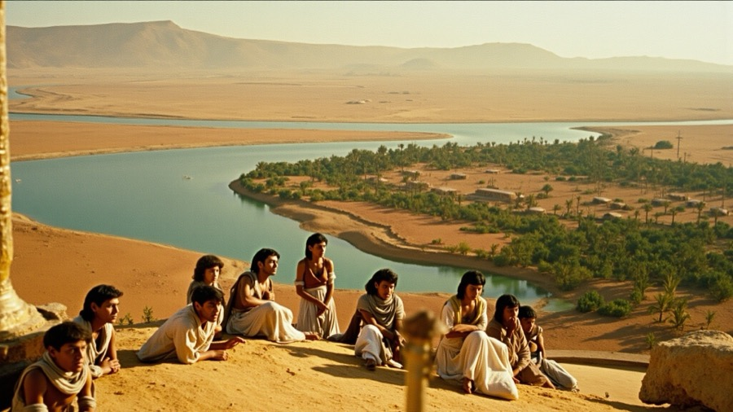
The black land of the Nile between red deserts, where pharaohs build for eternity.
The Black Land · The Low Nile · The Mongoose in the Linen · A Basket of Figs · Sun and Moon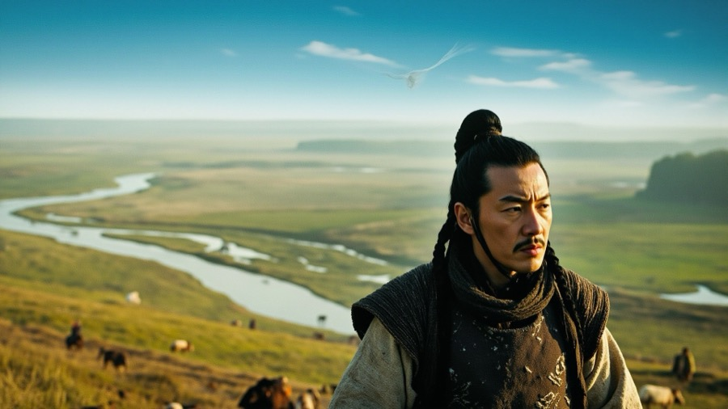
Riders of the endless blue steppe under the Eternal Sky, who hunt with white falcons.
Eight Silver Horses · The Seventy Cauldrons · The Winter of the Falcon · The White Banner · The Long WallTold as a picture book
Between the battles, the story is a page in an old book: a painted picture in a frame, a voice reading it, and the page turning over when you're ready. Everyone who speaks has a face and a voice of their own.
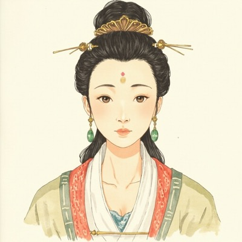
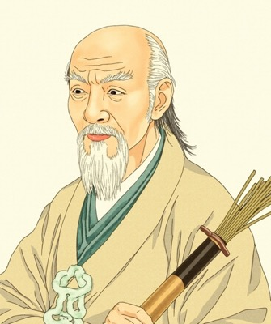
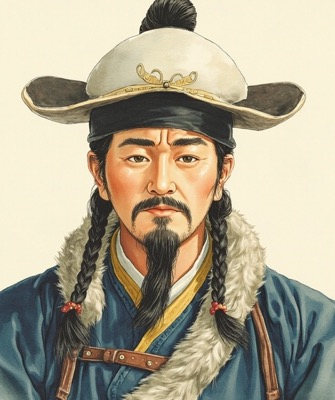
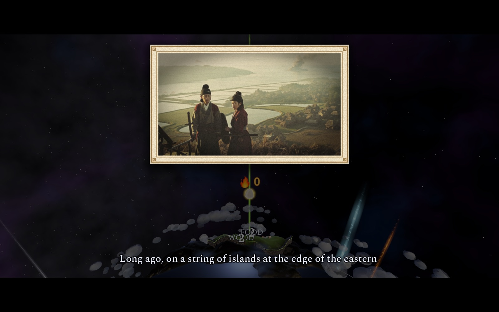
Play together
Up to four gods on one world, each with a tribe of their own and the rest run by rival gods. Host on your local network and friends find the game on theirs — or play online with Game Center on the Mac App Store, or with your friends on Steam.
LAN
On the same network
Host a world; it shows up on everyone else's LAN screen. Or join by address.
Mac App Store
Game Center
Sign in, and Apple's matchmaker finds players or invites your friends.
Steam
Steam friends
Host for your friends and invite them from the overlay, or join from the friends list.
Controller
Made for a gamepad too
Every screen and every miracle works on a controller — on a Steam Deck the hand rides the right stick.
More of the world
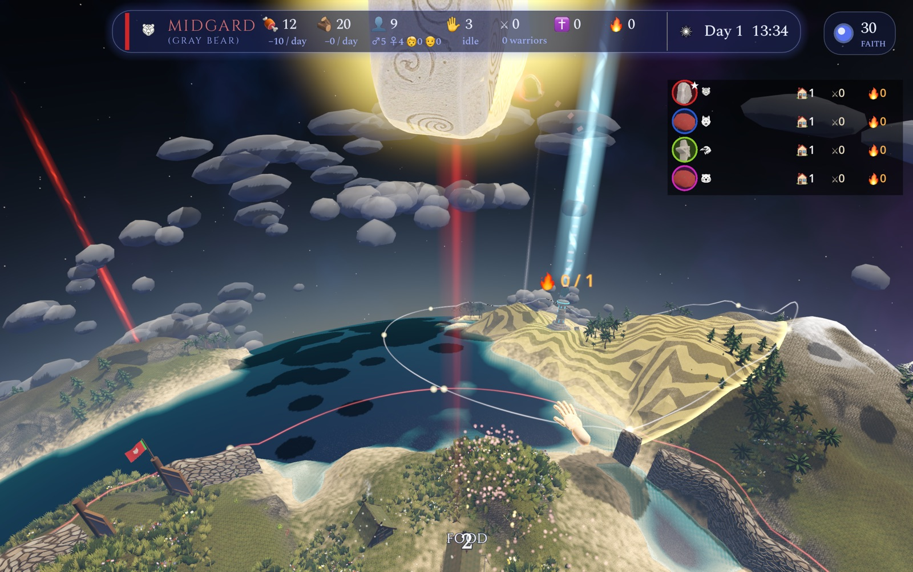
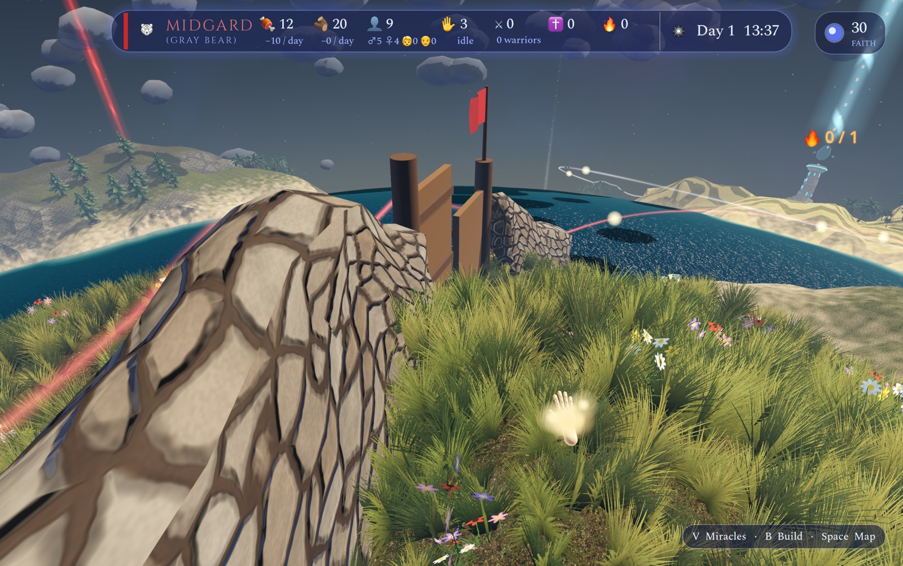